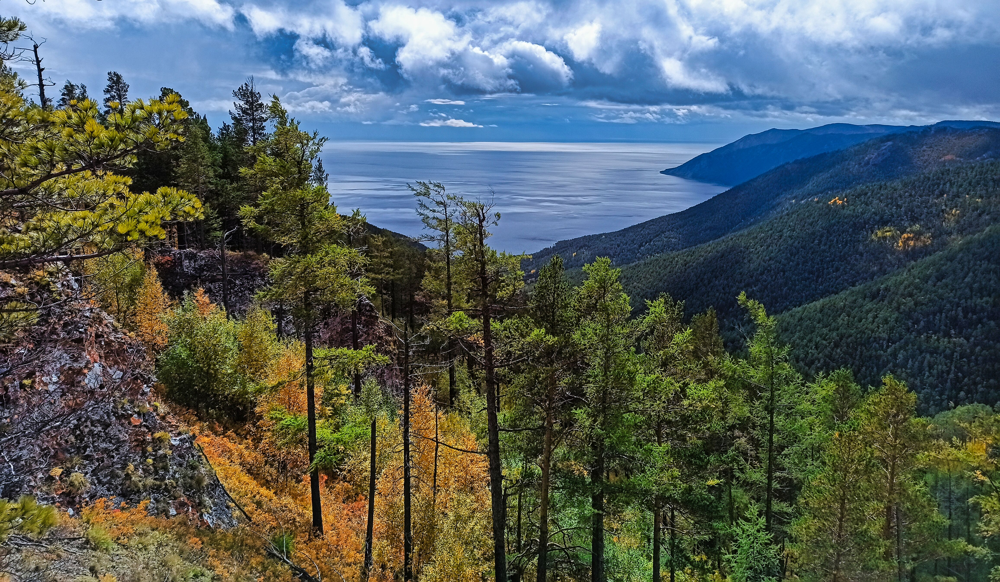
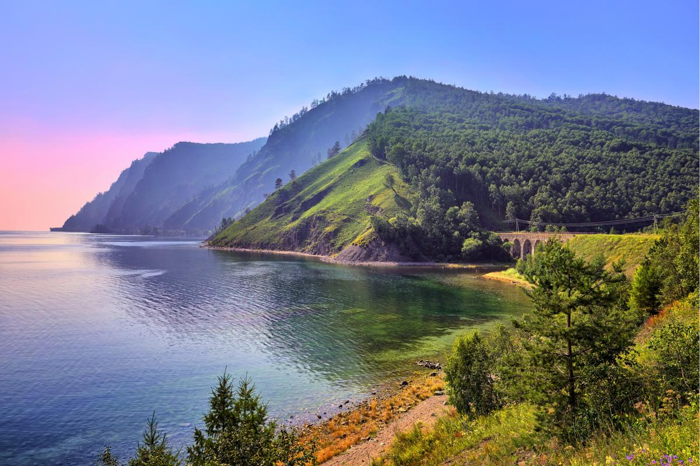

Остров Ольхон
Крупнейший остров Байкала, идеально подходит для прогулок и фото.
Подробнее

Листвянка
Посёлок у Иркутска с музеями и видом на Байкал.
Подробнее

Кругобайкальская железная дорога
Историческая дорога вдоль Байкала с уникальными видами.
Подробнее

Большое Голоустное
Леса, горы и чистейшая природа Байкала.
Подробнее

Южное Прибайкалье
Горы, реки и идеальные маршруты для походов.
Подробнее